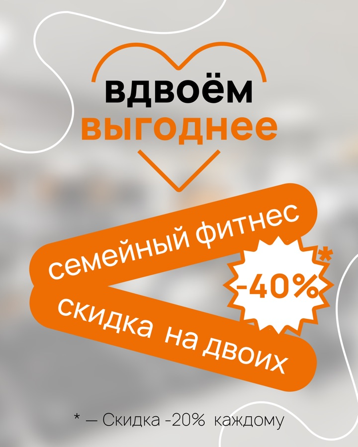
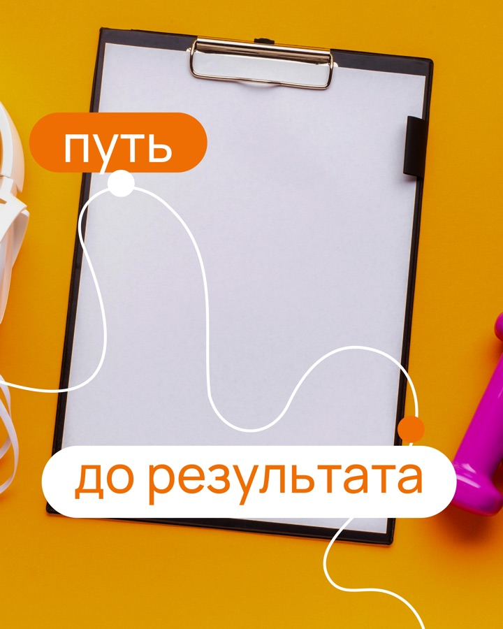

Фитнес-клуб · Брянск · первый месяц работы
Как 5 рубрик превратили фитнес-контент в систему удержания и продаж
Для Orange Style построили месяц не вокруг одинаковой мотивации «пора в зал», а вокруг реальных задач клуба: удержать действующих клиентов, снять страхи, показать экспертность и подвести к предложениям.
Все 10 постов, 5 сторис и 3 VK-виджета утверждены клиентом. Материалы загрузили в систему публикации.
Материалы загружены в систему публикации.



Задача месяца
Не дать лету превратить абонемент в «начну потом»
Клубу важно не только привлекать новых людей, но и поддерживать привычку тех, кто уже тренируется. Поэтому контент одновременно удерживает внимание, даёт пользу и спокойно объясняет предложения.
Что мешает клиенту продолжать
- летом проще отложить тренировки и выпасть из режима;
- силовые упражнения вызывают страхи и мифы;
- ценность персональной работы не всегда понятна;
- обычные рекламные посты быстро перестают замечать;
- для продления нужен понятный повод действовать сейчас.
Как отвечает контент-система
Полезные советы помогают сохранить режим. Разборы мифов снижают тревогу. Истории клуба дают доверие. Опросы возвращают диалог, а предложения появляются после подготовки аудитории.
Главная логика: польза → спокойствие → доверие → участие → действие.
Польза
Советы о режиме и питании, которые хочется сохранить.
Мифы
Снять страх силовых и ошибку «надо просто меньше есть».
Наши работы
Показать достижения и путь персональной работы.
Предложение
Подвести к семейному фитнесу и продлению абонемента.
Вовлечение
Узнать предпочтения и реальные причины пропусков.
Готовый продукт целиком
Все 18 изображений — без выборочных «лучших работ»
Смотрите структуру месяца, всю ленту, мини-прогрев и дополнительные VK-виджеты. Любой макет можно открыть полностью.
10 тем · 5 задач
Каждая тема занимает своё место в продаже
Материалы показаны в последовательности утверждённого контент‑плана.
- Как не забросить тренировки летомПольза · удержание и сохранения
- Любимое групповое направлениеВовлечение · опрос аудитории
- Стану как качок?Миф · снять страх силовых
- Наш чемпионНаши работы · доверие и персональные тренировки
- Вдвоём выгоднееПредложение · семейный фитнес
- Что есть до и после тренировкиПольза · сохраняемый материал
- Меньше ешь — похудеешь?Миф · экспертное объяснение
- Что мешает ходить в зал летом?Вовлечение · честная обратная связь
- Путь до результатаНаши работы · персональный подход
- Бонус постоянстваПредложение · продление абонемента
10 готовых постов
Одна система, но не десять одинаковых карточек
Фирменные оранжевый и серый связывают ленту, а фото, композиции и акценты меняются под задачу каждой темы.
Один мини-прогрев · 5 экранов
Не повторить пост, а подготовить к нему
Истории начинают с знакомой проблемы, меняют взгляд на неё и только потом ведут к предложению семейного фитнеса.
Условия внутри этой серии относятся к первому месяцу работы и не являются текущим предложением клуба.
3 дополнительных VK-виджета
Контент поддерживает не только ленту
Виджеты продолжают визуальную систему сообщества и ведут к трём важным темам: похудению, персональной работе и семейному фитнесу.
Сигнал доверия
После первого комплекта клиент оформил следующий
После первого месяца клиент оформил следующий заказ.
Следующий заказ
Повторный заказ
15 постов и 10 сторис
Клиент продолжил работу после первого месяца.
Результат проекта
Готовый результат проекта
Кейс доказывает объём, маркетинговую логику и качество готового продукта. Для вывода о продажах нужна отдельная аналитика.
Что сделали
- утверждённые контент-план, тексты и дизайн;
- 10 статичных постов в пяти рубриках;
- мини-прогрев из 5 связанных историй;
- 3 отдельно утверждённых VK-виджета;
- загрузка материалов в систему публикации;
- оформление следующего заказа клиентом.
Итог проекта
Кейс показывает утверждённый комплект и повторный заказ. Коммерческие показатели не измерялись.
Скидки и бонусы внутри макетов относятся к периоду проекта.
Нужен свой контент-месяц?
10 постов с маркетинговой логикой — от 4 990 ₽
Маркетолог собирает план и пишет тексты, дизайнер создаёт визуал, менеджер ведёт процесс. Пакет сторис состоит из мини‑прогревов по 5 кадров.